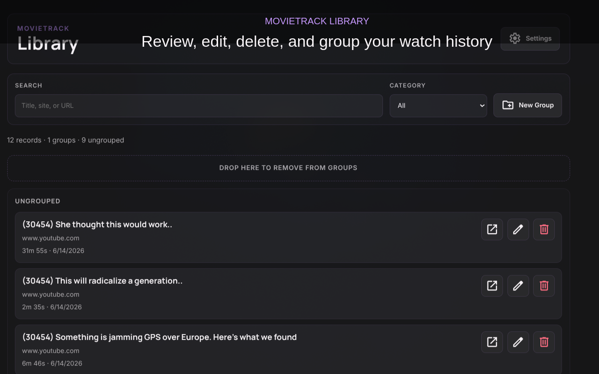
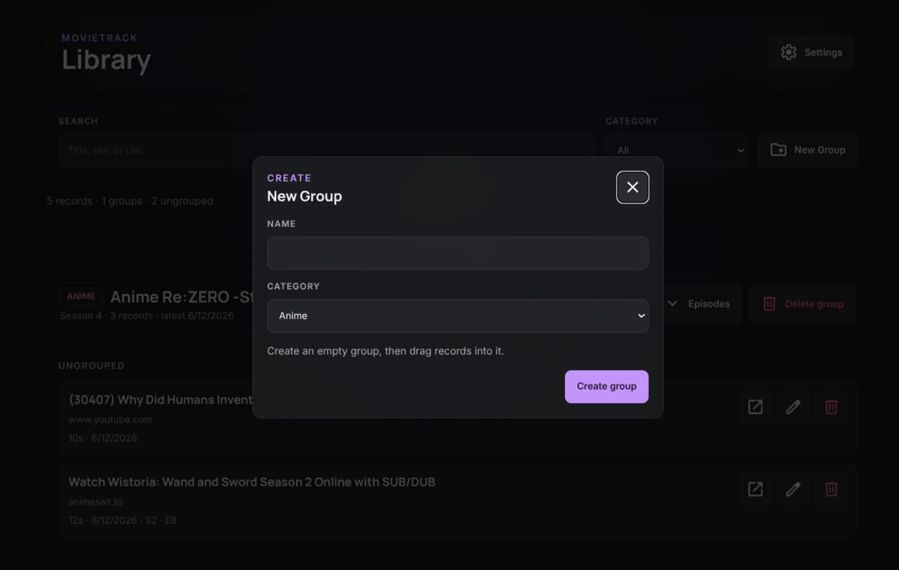
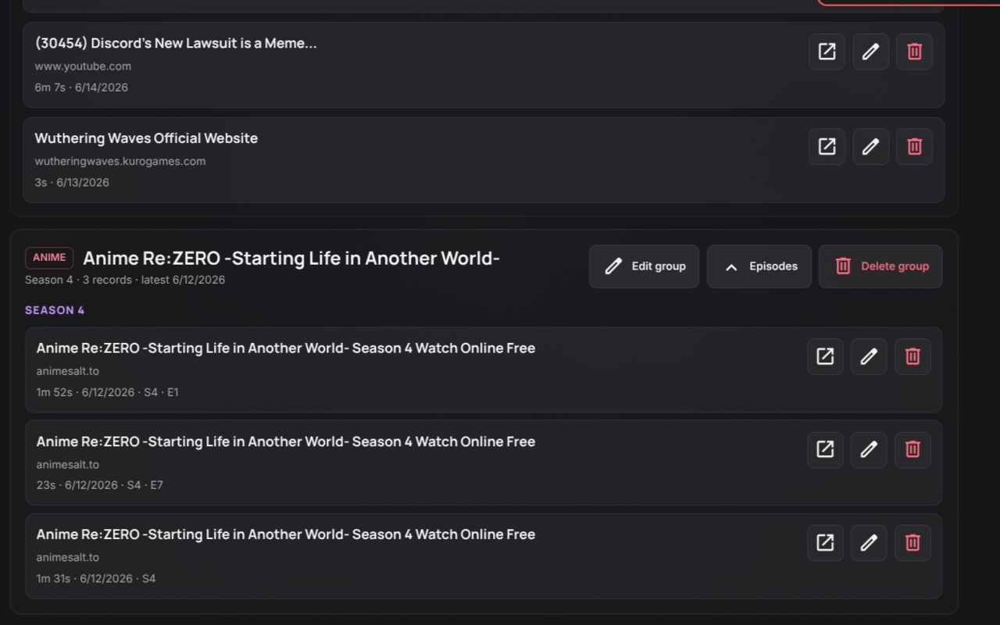
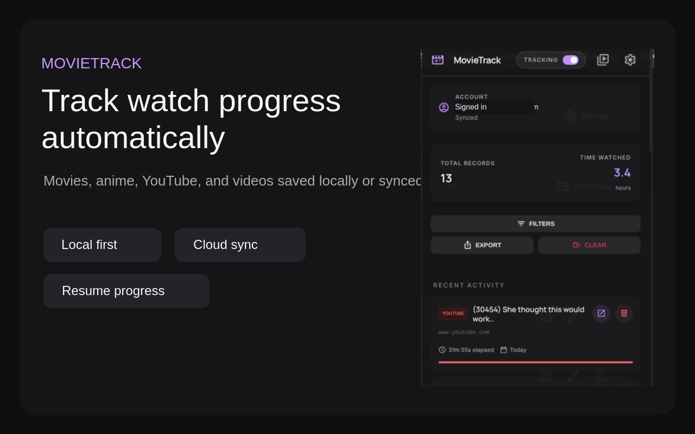
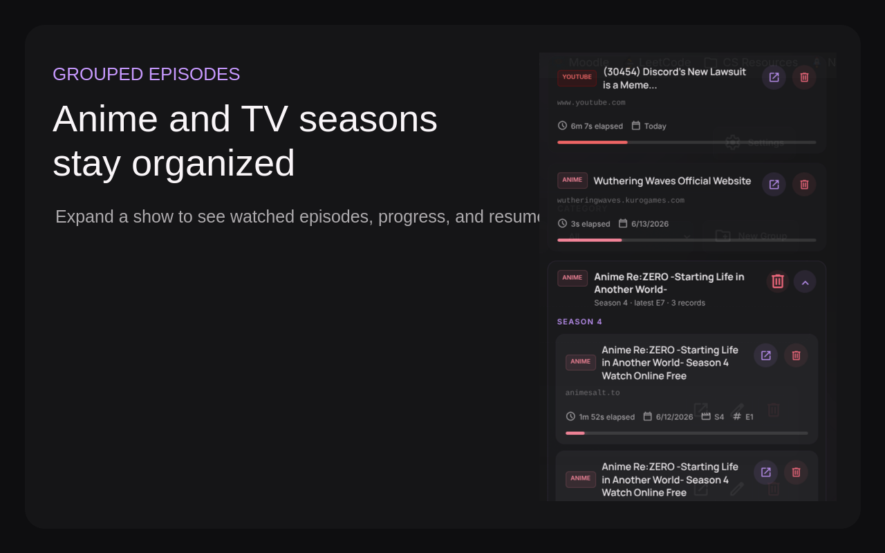
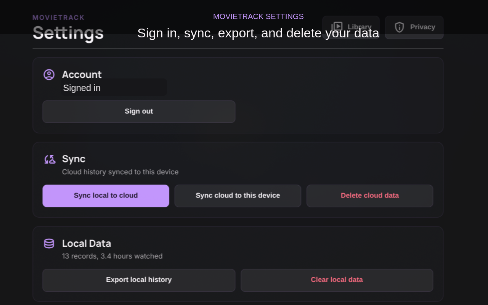

MIT Licensed Chrome Extension
Open watch progress for every browser.
MovieTrack remembers where you stopped across sites, then lets you organize episodes, movies, and videos into editable groups.

Built for the messy web you actually watch on.
MovieTrack detects active audible video playback on readable video pages instead of locking you into one platform. Availability and legal status vary by region; use it only with sites you are allowed to access.
How It Works
Track only when the signal is real.
MovieTrack does not save every tab. It waits for privacy consent, site access, an active audible tab, and a readable video element.
Local first
Records are saved on the device before any cloud sync happens.
Optional account sync
Google sign-in connects records to Supabase so the same account can sync across devices.
Minimal data
URLs are trimmed before storage. YouTube records keep only the video ID.
Install
Download the latest release or build from source.
Chrome Web Store review is in progress. For now, download the GitHub Release ZIP or load MovieTrack manually in Chrome or Brave.
# Release install
download movietrack.zip from GitHub Releases
unzip it
open chrome://extensions or brave://extensions
enable Developer mode
click "Load unpacked"
select the unzipped folder
# Source install
git clone https://github.com/tianiste/movie-track.git
cd movie-track
npm install
npm run build
# Chrome
# open chrome://extensions
# Brave
# open brave://extensions
# Enable Developer mode
# Click "Load unpacked"
# Select the movie-track folderLibrary is where messy history becomes usable.
Group seasons automatically, create your own groups, drag records between groups, and expand only what you need to inspect.



The popup stays fast.
Recent activity is grouped by show and season, collapsed by default, with the Library one click away for deeper organization.


Settings are separate from history.
Account, sync, deletion, export, Library access, and privacy controls live in a dedicated settings surface.
